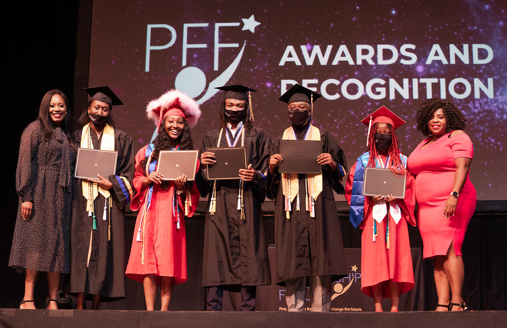

Partnership for the Future
Partnership for the Future is a community-driven college preparation and workforce development program dedicated to breaking the cycle of poverty for young people by providing training and educational opportunities to fuel their future success. Their mission is to help high-achieving high school students become better equipped for college and beyond. Partnership for the Future operates the largest and most accomplished privately funded college preparatory and workforce development program in the Commonwealth of Virginia. Moody’s Model UN is so excited to have PFF as our charity!